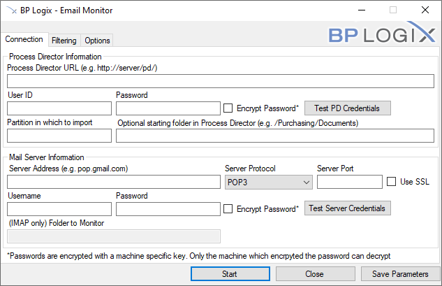
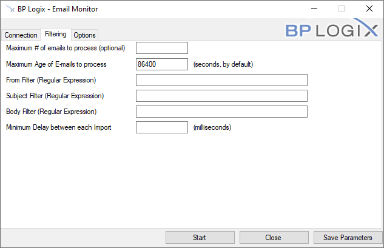
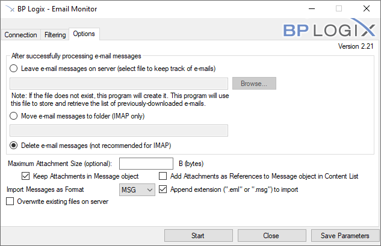
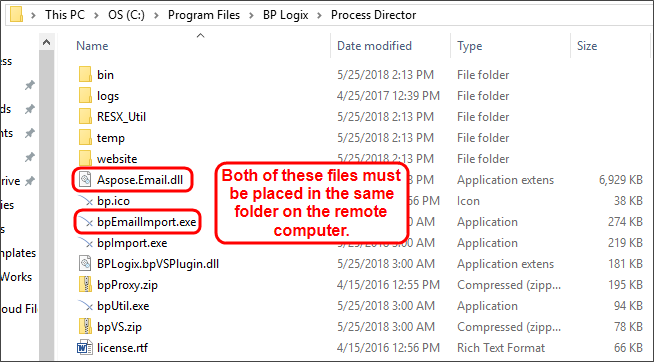

The bpEmailImport utility (bpEmailImport.exe) allows you to send formatted emails to a process either on a schedule or any time an email is received. Using bpEmailImport.exe, you can set the conditions and format under which you would like to import the emails.
The executable file, bpEmailImport.exe, is located in the c:\Program Files\BP Logix\Process Director\ directory by default. You can copy this utility to any computer that has Internet Explorer 6 or higher installed.
Cloud customers can download the utility from the Downloads section of the BP Logix support site.

Enter the URL of the Process Director here.
Enter your User information in order to let bpLogixImport.exe log onto your Process Director. Click the Test PD Credentials button to see if the information you entered was valid.
For bpEmailImport v2.21 and higher, this property enables you to encrypt the password in the command line command. The encryption uses a machine-specific key, so the password can only be decrypted on the machine on which the encryption was performed. So, a bpImport command that uses an encrypted password must be run on the machine on which it was created. If the command runs on a different machine, the password cannot be decrypted when passing the command to the Process Director server.
Enter the name of the partition that you wish to import emails to.
You can import the emails to a specific folder in the partition, using this field to specify the path.
This is the host name of the server sending your email.
Select the mail server type for your email server, i.e., either POP3 or IMAP.
Enter the port you use to connect to your POP server. By default, the server port is 110, however if you connect to your POP server using a different port, enter it there.
You can use a secure protocol to retrieve your email by checking this box.
Enter your Username and Password for the POP server to let bpLogixImport.exe retrieve incoming emails. Click the Test Server Credentials button to verify that your input was valid
If your mail server is an IMAP server, you can specify that the utility map a specific folder in the email account to monitor.

Enter a number in this field to set the maximum number of emails able to be imported at once.
You can tell bpEmailImport.exe to only import emails up to a certain age (in seconds, by default).
You can use regular expressions to filter which emails will be imported by the sender of the email.
You can use regular expressions to filter which emails will be imported by their subjects.
You can use regular expressions to filter which emails will be imported by the content of their bodies.
You can set a delay between each email imported to reduce server traffic.

You can store a history of all previous emails in a specific file on your server. When this option is selected, you can click the Browse button to browse to the file you desire to use to store the email tracking information.
If you're using an IMAP email system, you can move the messages to a different folder for storage. When this option is selected, you can enter the name of the storage folder in the text box provided.
You cans elect this option to delete the emails after they've been imported. This option is mainly applicable to POP3 email systems, and the POP3 server must be configured to delete emails after they are downloaded. This option is not recommended for IMAP systems.
Enter a number, in bytes, of the maximum attachment size for emails you wish to import, if desired.
Selecting this option will encapsulate any email attachments into the EML or MSG file that will be created to contain the email message.
Selecting this option will add the email attachments as separate files and appended as reference objects to the EML or MSG files. You can then further manipulate the attachments, if desired. For instance, you can run an Item Actions custom task to import the attachments into a separate folder in the Content List.
You can select to use either the MSG or EML file format to store the imported message.
Selecting this option will add the appropriate file extension to the imported file. This should be selected by default. For example, this is necessary if you plan to export the message to a local computer and use an email client to open it.
You can choose to have old files be overwritten by new ones.
Using the Windows Scheduler, you can run the Email Import utility via a command line argument, e.g.,
The Email Import utility can be called by using a number of command line switches, which are described below. While in the command line interface, you can also see the full list of available switches by invoking the "/?" help switch, e.g., bpEmailImport /?
The available command line switches correspond to the properties that are accessible in the GUI, as described above.
| SWITCH | DESCRIPTION |
|---|---|
| -W | The Process Director's web services URL |
| -S | The location of the mail server |
| -I | The partition into which mail will be imported |
| -U | The Process Director user for web service authentication |
| -P | The Process Director password for web service authentication |
| -T | The protocol used to get mail from the server (IMAP or POP3) |
| -F | The Process Director folder into which the mail is imported |
| -L | The folder in which bpEmailImport's logs will be saved |
| --port | The port used to connect to the mail server |
| --ssl | Tells bpEmailImport to use SSL to connect to the mail server |
| --popuser | The mail server authentication user |
| --poppassword | The mail server authentication password |
| --imapfolder | The mailbox folder from which the mail will be pulled |
| --leave | Tells bpEmailImport to leave mail on the server |
| --leavefile | The file in which bpEmailImport records the mail it downloads |
| --imapmovefolder | The mailbox folder into which mail will be moved |
| --delete | Tells bpEmailImport to delete mail after download |
| --limitsize | The maximum attachment size (in bytes) to download |
| --strip | Tells bpEmailImport not to download mail attachments |
| --Nextension | Tells bpEmailImport to add file extension to uploaded mail |
| --addRef | Adds attachments as references to uploaded mail |
| --overwrite | Tells bpEmailImport to overrwrite existing uploaded mail |
| --limitcount | The maximum number of emails to import |
| --maxage | Maximum email age (in seconds) to download |
| --delay | The delay (in milliseconds) between each mail upload |
| --filterfrom | Only import mail where the from field matches this regex |
| --filtersubject | Only import mail where the subject field matches this regex |
| --filterbody | Only import mail where the body field matches this regex |
| -N --no-gui |
Runs bpEmailImport in command line mode |
The import utility can include Meta Data with each of the files being uploaded to Process Director. This Meta Data can set the categories and attributes for the document on the server. This occurs if the option is selected to allow associated Meta Data files on the import dialog. If this option is selected the import utility will attempt to find matching file names with “.XML” appended to the name. For example, if the import utility finds a file named mydoc.pdf, it will attempt to locate the mydoc.pdf.xml file for the Meta Data. The Meta Data XML file must be of a certain format to be recognized as valid Meta Data. The XML file must contain the following structure and tags.
The <META_NAME> must match an External Name in a category attribute for the document to be assigned to that category. If a matching External Name is not found in the category tree the Meta Data is discarded after the upload completes.
For example, assume you have a category named Operations that contains a subcategory named Quality with an attribute name of ActionManager. You can assign this entire category tree (i.e. Operations.Quality) to the imported document by using a matching External Name in the ActionManager attribute. If the external name in the ActionManager attribute is set to “manager_name”, the XML for the imported document would look as follows:
To set values for checkboxes, the values YES and NO correspond to a checked state and an unchecked state, respectively.
Date values vary based on locale: if you’re in the USA, use mm/dd/yyyy. If you’re elsewhere, use dd/mm/yyyy.
The executable file, bpEmailImport.exe, is located in the c:\Program Files\BP Logix\Process Director\ directory by default. You can copy this utility to any computer that has Internet Explorer 6 or higher installed, and has Web Services running. When you do so, ensure that you also copy over the Aspose.Email.dll file into the same folder as you place the email import utility. Both files must be in the same folder for bpEmailImport.exe to run correctly.

Simply execute bpEmailImport.exe to launch and configure the import dialog settings.